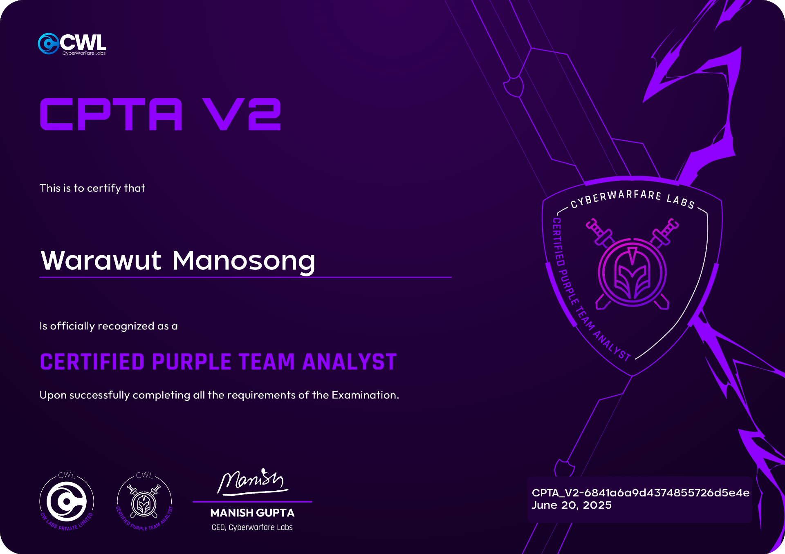

<!DOCTYPE html>
<html lang="en">
<head>
    <meta charset="UTF-8">
    <meta name="viewport" content="width=device-width, initial-scale=1.0">
    <title>CPTA v2 Review — CyberWarFare Labs Certified Purple Team Analyst | Chicken0248</title>
    <meta name="description" content="A detailed review of the CyberWarFare Labs Certified Purple Team Analyst v2 certification — covering the course, AD lab environment, exam scheduling, and tips for passing your first purple team cert." />
    <meta property="og:type" content="article" />
    <meta property="og:site_name" content="Chicken0248" />
    <meta property="og:url" content="https://chickenloner.github.io/reviews/cpta/" />
    <meta property="og:title" content="Review — CyberWarFare Labs : Certified Purple Team Analyst [CPTA v2], My First Purple Team Certification" />
    <meta property="og:description" content="A detailed review of the CyberWarFare Labs Certified Purple Team Analyst v2 certification — covering the course, AD lab environment, exam scheduling, and tips for passing your first purple team cert." />
    <meta property="og:image" content="https://chickenloner.github.io/reviews/cpta/cover.png" />
    <meta name="twitter:card" content="summary_large_image" />
    <meta name="twitter:site" content="@Chicken_0248" />
    <meta name="twitter:title" content="Review — CyberWarFare Labs : Certified Purple Team Analyst [CPTA v2], My First Purple Team Certification" />
    <meta name="twitter:description" content="A detailed review of the CyberWarFare Labs Certified Purple Team Analyst v2 certification — covering the course, AD lab environment, exam scheduling, and tips for passing your first purple team cert." />
    <meta name="twitter:image" content="https://chickenloner.github.io/reviews/cpta/cover.png" />
    <link rel="icon" href="/chicken0248.png" type="image/png">
    <script src="https://cdn.tailwindcss.com"></script>
    <script crossorigin src="https://unpkg.com/react@18/umd/react.production.min.js"></script>
    <script crossorigin src="https://unpkg.com/react-dom@18/umd/react-dom.production.min.js"></script>
    <script src="https://unpkg.com/@babel/standalone/babel.min.js"></script>
    <script src="https://unpkg.com/lucide@latest"></script>
    <style>
        @keyframes fadeIn {
            from { opacity: 0; transform: translateY(20px); }
            to   { opacity: 1; transform: translateY(0); }
        }
        .animate-fadeIn { animation: fadeIn 0.5s ease-out; }

        /* ── DARK MODE ── */
        .dark.min-h-screen { background: linear-gradient(135deg, #0f172a 0%, #141f35 50%, #0a1628 100%) !important; }
        .dark nav { background-color: rgba(15,23,42,0.96) !important; border-bottom-color: rgba(51,65,85,0.5) !important; }
        .dark .bg-white    { background-color: #1e293b !important; }
        .dark .bg-gray-50  { background-color: #0f172a !important; }
        .dark .bg-gray-100 { background-color: #334155 !important; }
        .dark .bg-amber-50   { background-color: rgba(245,158,11,0.10) !important; }
        .dark .bg-amber-100  { background-color: rgba(245,158,11,0.20) !important; }
        .dark .bg-orange-50  { background-color: rgba(234,88,12,0.10) !important; }
        .dark .bg-orange-100 { background-color: rgba(234,88,12,0.20) !important; }
        .dark .bg-blue-50    { background-color: rgba(37,99,235,0.12) !important; }
        .dark .bg-blue-100   { background-color: rgba(37,99,235,0.20) !important; }
        .dark .bg-green-100  { background-color: rgba(22,163,74,0.20) !important; }
        .dark .text-gray-800 { color: #e2e8f0 !important; }
        .dark .text-gray-700 { color: #cbd5e1 !important; }
        .dark .text-gray-600 { color: #94a3b8 !important; }
        .dark .text-gray-500 { color: #64748b !important; }
        .dark .text-gray-400 { color: #475569 !important; }
        .dark .text-amber-700  { color: #fbbf24 !important; }
        .dark .text-orange-700 { color: #fb923c !important; }
        .dark .text-blue-600   { color: #60a5fa !important; }
        .dark .text-green-700  { color: #4ade80 !important; }
        .dark .border-gray-100 { border-color: #334155 !important; }
        .dark .border-gray-200 { border-color: #475569 !important; }
        .dark .border-amber-200  { border-color: rgba(245,158,11,0.3) !important; }
        .dark .border-orange-200 { border-color: rgba(234,88,12,0.3) !important; }
        .dark .hover\:bg-gray-50:hover { background-color: #1e293b !important; }
        .dark .hover\:text-blue-600:hover { color: #60a5fa !important; }
        .dark ::-webkit-scrollbar       { width: 6px; }
        .dark ::-webkit-scrollbar-track { background: #0f172a; }
        .dark ::-webkit-scrollbar-thumb { background: #334155; border-radius: 3px; }
    </style>
</head>
<body>
    <div id="root"></div>

    <script type="text/babel">
        const { useState, useEffect, useRef } = React;

        const Icon = ({ name, className = "w-6 h-6", ...props }) => {
            const ref = useRef(null);
            useEffect(() => {
                if (ref.current) {
                    const el = lucide.createElement(lucide[name], { class: className });
                    ref.current.innerHTML = '';
                    ref.current.appendChild(el);
                }
            }, [name, className]);
            return <i ref={ref} className={`flex-shrink-0 ${className}`} {...props}></i>;
        };

        const Section = ({ id, title, icon, children }) => (
            <section id={id} className="scroll-mt-24">
                <h2 className="text-2xl font-bold text-gray-800 mb-5 flex items-center gap-3 border-b border-gray-200 pb-3">
                    <Icon name={icon} className="w-6 h-6 text-amber-600" />
                    {title}
                </h2>
                <div className="space-y-4">{children}</div>
            </section>
        );

        let figCount = 0;
        const resetFigCount = () => { figCount = 0; };

        const Fig = ({ src, alt }) => {
            figCount += 1;
            const n = figCount;
            return (
                <figure className="my-5">
                    
                    <figcaption className="text-center text-xs text-gray-400 mt-1.5 font-mono">Figure {n}</figcaption>
                </figure>
            );
        };

        const Callout = ({ children }) => (
            <blockquote className="bg-amber-50 border-l-4 border-amber-400 rounded-r-xl px-5 py-4 my-4 text-gray-700 italic text-sm leading-relaxed">
                {children}
            </blockquote>
        );

        const TipList = ({ items }) => (
            <ul className="list-disc list-outside ml-5 space-y-2 text-gray-700">
                {items.map((item, i) => <li key={i}>{item}</li>)}
            </ul>
        );

        const B = ({ children }) => <strong className="text-gray-800">{children}</strong>;
        const A = ({ href, children }) => (
            <a href={href} target="_blank" rel="noopener noreferrer"
               className="text-blue-600 hover:underline">{children}</a>
        );

        const renderStars = (rating) => {
            const full = Math.floor(rating);
            const half = rating - full >= 0.5;
            return '★'.repeat(full) + (half ? '½' : '') + '☆'.repeat(5 - full - (half ? 1 : 0));
        };

        const App = () => {
            const [dark, setDark] = useState(() => localStorage.getItem('darkMode') === 'true');
            const [meta, setMeta] = useState(null);
            useEffect(() => { localStorage.setItem('darkMode', dark); }, [dark]);

            useEffect(() => {
                fetch('/data/reviews.json')
                    .then(r => r.json())
                    .then(data => {
                        const entry = data.find(r => r.url === '/reviews/cpta/index.html');
                        if (entry) setMeta(entry);
                    })
                    .catch(() => {});
            }, []);

            resetFigCount();

            const tocItems = [
                { id: 'introduction',      label: 'Introduction',            icon: 'BookOpen'      },
                { id: 'course-experience', label: 'Course Experience',        icon: 'GraduationCap' },
                { id: 'lab-experience',    label: 'Lab Experience',           icon: 'FlaskConical'  },
                { id: 'exam-experience',   label: 'Exam Experience',          icon: 'ClipboardList' },
                { id: 'tips',              label: 'Key Takeaways & Tips',     icon: 'Lightbulb'     },
            ];

            return (
                <div className={`min-h-screen bg-gradient-to-br from-slate-50 via-amber-50 to-orange-50 ${dark ? 'dark' : ''}`}>

                    {/* Navigation */}
                    <nav className="sticky top-0 z-50 bg-white/80 backdrop-blur-md border-b border-gray-200 px-4 py-3">
                        <div className="max-w-4xl mx-auto flex items-center justify-between">
                            <div className="flex items-center gap-2 text-sm flex-wrap">
                                <a href="/" className="flex items-center gap-2 hover:opacity-80 transition-opacity">
                                    
                                    <span className="font-bold text-gray-800 hidden sm:inline">Chicken0248</span>
                                </a>
                                <span className="text-gray-400">/</span>
                                <a href="/reviews/index.html" className="font-medium text-gray-600 hover:text-blue-600 transition-colors">Reviews</a>
                                <span className="text-gray-400">/</span>
                                <span className="font-semibold text-gray-700">CPTA v2</span>
                            </div>
                            <button onClick={() => setDark(!dark)}
                                className="p-2 rounded-lg hover:bg-gray-100 text-gray-600 transition-colors text-lg">
                                {dark ? '\u2600\uFE0F' : '\uD83C\uDF19'}
                            </button>
                        </div>
                    </nav>

                    <main className="max-w-4xl mx-auto px-4 py-8 space-y-10 animate-fadeIn">

                        {/* Hero */}
                        <div className="relative overflow-hidden rounded-3xl shadow-2xl">
                            
                            <div className="absolute inset-0 bg-gradient-to-t from-black/80 via-black/30 to-transparent" />
                            <div className="absolute bottom-0 left-0 right-0 p-6 md:p-8 text-white">
                                <h1 className="text-2xl md:text-3xl font-extrabold tracking-tight mb-3 leading-snug">
                                    Review — CyberWarFare Labs : Certified Purple Team Analyst [CPTA v2], My First Purple Team Certification
                                </h1>
                                <div className="flex flex-wrap gap-2 text-sm">
                                    <span className="bg-white/20 backdrop-blur-sm px-3 py-1 rounded-full flex items-center gap-1.5">
                                        <Icon name="Building2" className="w-3.5 h-3.5" /> CyberWarFare Labs
                                    </span>
                                    <span className="bg-white/20 backdrop-blur-sm px-3 py-1 rounded-full flex items-center gap-1.5">
                                        <Icon name="Calendar" className="w-3.5 h-3.5" /> June 2025
                                    </span>
                                    <span className="bg-purple-500/80 backdrop-blur-sm px-3 py-1 rounded-full flex items-center gap-1.5">
                                        <Icon name="Layers" className="w-3.5 h-3.5" /> Purple Team · Adversary Emulation
                                    </span>
                                    <span className="bg-green-500/80 backdrop-blur-sm px-3 py-1 rounded-full flex items-center gap-1.5">
                                        <Icon name="CheckCircle" className="w-3.5 h-3.5" /> Passed
                                    </span>
                                </div>
                            </div>
                        </div>

                        {/* Metadata */}
                        <div className="bg-white rounded-2xl border border-gray-200 p-5 shadow-sm">
                            <div className="grid grid-cols-2 md:grid-cols-4 gap-4 text-sm">
                                <div><span className="text-gray-500 block">Certification</span><span className="font-semibold text-gray-800">CPTA v2</span></div>
                                <div><span className="text-gray-500 block">Provider</span><span className="font-semibold text-gray-800">CyberWarFare Labs</span></div>
                                <div><span className="text-gray-500 block">Difficulty</span><span className="font-semibold text-amber-600">{meta?.difficulty ?? '—'}</span></div>
                                <div><span className="text-gray-500 block">Rating</span>
                                    {meta?.rating ? (
                                        <span className="font-semibold text-gray-800 flex items-center gap-1">
                                            <span className="text-yellow-500">{renderStars(meta.rating)}</span>
                                            <span className="text-gray-500 font-normal text-xs ml-0.5">{meta.rating.toFixed(1)}/5.0</span>
                                        </span>
                                    ) : <span className="text-gray-400">—</span>}
                                </div>
                            </div>
                        </div>

                        {/* Table of Contents */}
                        <div className="bg-white rounded-2xl border border-gray-200 p-6 shadow-sm">
                            <h2 className="text-lg font-bold text-gray-800 mb-4 flex items-center gap-2">
                                <Icon name="List" className="w-5 h-5 text-amber-600" />
                                Table of Contents
                            </h2>
                            <div className="grid sm:grid-cols-2 gap-1">
                                {tocItems.map((item, i) => (
                                    <a key={item.id} href={`#${item.id}`}
                                       className="flex items-center gap-2 px-3 py-2 rounded-lg text-gray-700 hover:bg-gray-50 hover:text-blue-600 transition-colors text-sm">
                                        <Icon name={item.icon} className="w-4 h-4 text-gray-400" />
                                        <span className="text-gray-400 font-mono text-xs w-5">{i + 1}.</span>
                                        <span className="font-medium">{item.label}</span>
                                    </a>
                                ))}
                            </div>
                        </div>

                        {/* ═══════════ INTRODUCTION ═══════════ */}
                        <Section id="introduction" title="Introduction" icon="BookOpen">
                            <p className="text-gray-700 leading-relaxed">
                                Hello everyone! It's me Chicken0248 again. In this blog I'll briefly cover the{' '}
                                <B>Certified Purple Team Analyst [CPTA v2]</B> course, labs, and exam from{' '}
                                <A href="https://cyberwarfare.live/">CyberWarFare Labs</A> — known for affordable cybersecurity
                                training, frequent discounts, and their cloud lab environments.
                            </p>
                        </Section>

                        {/* ═══════════ COURSE EXPERIENCE ═══════════ */}
                        <Section id="course-experience" title="Course Experience" icon="GraduationCap">
                            <Fig src="image-1.png" alt="CPTA v2 course portal" />

                            <p className="text-gray-700 leading-relaxed">
                                Course access is available immediately after purchase. You can review the full syllabus{' '}
                                <A href="https://cyberwarfare.live/wp-content/uploads/2023/10/Purple-Team-Analyst-V2-CPTA-V2.pdf">here</A>.
                            </p>
                            <p className="text-gray-700 leading-relaxed">
                                One thing to note: the syllabus is missing a section called <B>Purple Teaming Infrastructure</B>,
                                which covers the blue team toolset used in the course and labs:
                            </p>
                            <ul className="list-disc list-outside ml-5 space-y-1 text-gray-700">
                                <li>Wazuh ELK</li>
                                <li>Velociraptor</li>
                                <li>TheHive</li>
                                <li>MISP</li>
                                <li>Moloch / Arkime</li>
                                <li>IDS Tower</li>
                            </ul>
                        </Section>

                        {/* ═══════════ LAB EXPERIENCE ═══════════ */}
                        <Section id="lab-experience" title="Lab Experience" icon="FlaskConical">
                            <Fig src="image-2.png" alt="CPTA v2 lab environment diagram — attack and blue team investigation sides" />

                            <p className="text-gray-700 leading-relaxed">
                                The lab environment has you connect via VPN, attack an external-facing network and an Active Directory
                                network, then pivot to the blue team side to observe and investigate the activity using the tools
                                taught in the course.
                            </p>
                            <p className="text-gray-700 leading-relaxed">
                                To be honest — I didn't complete any of the labs before taking the exam. I tried to run through the
                                AD Exploitation &amp; Investigation lab on the Friday before my exam date, but I couldn't access IDS
                                Tower and support was offline for the evening, so I went into the exam cold.
                            </p>

                            <Fig src="image-3.png" alt="Lab access activation page" />

                            <Fig src="image-4.png" alt="OpenVPN file and credentials for lab environment" />

                            <p className="text-gray-700 leading-relaxed">
                                Lab time doesn't start automatically after purchase — you activate it yourself, which kicks off
                                a <B>30-day countdown</B>. Once activated, you'll get an OpenVPN file and credentials to connect.
                            </p>

                            <Fig src="image-5.png" alt="Lab modules breakdown" />

                            <p className="text-gray-700 leading-relaxed">
                                There are <B>4 lab modules</B> with 29 labs in total:
                            </p>
                            <ul className="list-disc list-outside ml-5 space-y-1 text-gray-700">
                                <li>Web Exploitation &amp; Investigations — 6 labs</li>
                                <li>Network Exploitation &amp; Investigations — 7 labs</li>
                                <li>Host Exploitation &amp; Investigations — 6 labs</li>
                                <li>AD Exploitation &amp; Investigations — 10 labs</li>
                            </ul>
                            <p className="text-gray-700 leading-relaxed">
                                The labs cover very accessible red team techniques and the corresponding investigation process for
                                each attack — great for anyone just starting out on either the red or blue team side. I revisited
                                the lab environment after the exam and IDS Tower was still down, but every other lab worked fine
                                without it. Don't let that stop you — do the labs before your exam.
                            </p>
                        </Section>

                        {/* ═══════════ EXAM EXPERIENCE ═══════════ */}
                        <Section id="exam-experience" title="Exam Experience" icon="ClipboardList">
                            <Fig src="image-6.png" alt="CPTA v2 exam certification procedure" />

                            <p className="text-gray-700 leading-relaxed">
                                The exam format is <B>48 hours total</B>: 24 hours of lab access to the exam environment, followed
                                by 24 hours to complete and submit your deliverable report. If you fail, you get one free retake with
                                feedback provided.
                            </p>
                            <p className="text-gray-700 leading-relaxed">
                                Unlike CRTA and CCDA which require scheduling by email, CPTA v2 uses an <B>online scheduling portal</B>.
                            </p>

                            <Fig src="image-7.png" alt="Exam scheduling calendar — pick a date and time in GMT" />

                            <p className="text-gray-700 leading-relaxed">
                                Head to the exam page on the labs portal, pick an available date, select your time in GMT,
                                and click "SCHEDULE".
                            </p>

                            <Fig src="image-8.png" alt="Confirmation dialog — type Confirm to proceed" />

                            <p className="text-gray-700 leading-relaxed">
                                A confirmation dialog will appear — type "Confirm" and click "SCHEDULE" again to lock it in.
                            </p>

                            <Fig src="image-9.png" alt="Exam scheduled confirmation screen" />

                            <p className="text-gray-700 leading-relaxed">
                                Your schedule is now confirmed and you'll receive a confirmation email.
                            </p>

                            <Fig src="image-10.png" alt="Exam countdown timer and pre-exam information on the portal" />

                            <p className="text-gray-700 leading-relaxed">
                                The countdown starts immediately after scheduling. You can cancel up to 3 hours before the start time,
                                and some exam information is visible on this page ahead of time. One heads-up: <B>you won't receive a
                                reminder email on exam day</B>, so set your own alarm.
                            </p>
                            <p className="text-gray-700 leading-relaxed">
                                Once the exam starts, the exam page will display everything you need: VPN file and credentials,
                                blue team environment credentials, scenario, red team simulation, blue team objectives, overall exam
                                objectives, deliverable requirements, and scope of engagement. A live countdown timer is always visible.
                            </p>
                            <p className="text-gray-700 leading-relaxed">
                                On the red team side — you can complete the red team objectives within about an hour. It's actually
                                easier than CRTA on the attack side, but remember: this is a <B>purple team</B> exam. The real work
                                is conducting multiple targeted attacks, investigating each one on the blue team side, and creating
                                detection rules for them. After fully compromising the domain controller I stepped back, re-read the
                                exam objectives, and built a proper plan for the attack-investigate-detect cycle before writing my
                                report alongside execution.
                            </p>

                            <Fig src="image-11.png" alt="Lab revert in progress — 3-minute revert with extra time for Windows initialization" />

                            <p className="text-gray-700 leading-relaxed">
                                The exam includes <B>2 revert quota</B>. I used my first revert to start fresh — a clean environment
                                meant I could execute each attack step deliberately and investigate it without leftover noise from
                                my initial blind run. Revert takes about 3 minutes, plus extra time for Windows machines to fully
                                initialize and agents to reconnect to the SIEM.
                            </p>
                            <p className="text-gray-700 leading-relaxed">
                                On the blue team side, the toolset is quite different from CCDA. Not all tools and log sources
                                covered in the course and labs will be present in the exam environment, so take time to explore
                                what's available before diving into your investigation.
                            </p>

                            <Callout>
                                Near the end of report writing, my Elastic instance broke — a missing configuration caused all
                                logs to disappear and I couldn't query anything. I wrapped up what I had and submitted. If this
                                happens to you, contact support immediately — a revert alone may not fix an Elastic configuration issue.
                            </Callout>

                            <p className="text-gray-700 leading-relaxed">
                                Report submission still goes via email with a specific subject line and filename. You'll get the
                                subject when you book, and the required filename after your 24-hour lab window closes — at which
                                point the 24-hour report submission countdown begins.
                            </p>

                            <Fig src="image-12.png" alt="Report submission acknowledgement email" />

                            <p className="text-gray-700 leading-relaxed">
                                After submitting, CyberWarFare Labs will acknowledge receipt and ask you to wait 5–7 business days
                                for results.
                            </p>

                            <Fig src="image-13.png" alt="Pass result email received on Friday" />

                            <p className="text-gray-700 leading-relaxed">
                                I received my result on a Friday — longer than CRTA and CCDA (which both came back the next day),
                                but still well within the window. Passed on the first attempt.
                            </p>
                            <p className="text-gray-700 leading-relaxed">
                                Unusually, they sent the certificate via email rather than through Accredible. The reason was
                                explained in a note included with the result:
                            </p>
                            <Callout>
                                Digital Certificate + Badge (via Accredible): We're currently updating our badge infrastructure.
                                You can expect to receive your Accredible certificate and shareable badge by mid-July.
                                We'll notify you as soon as it's live.
                            </Callout>
                            <p className="text-gray-700 leading-relaxed">
                                There was also a slight date error on the emailed certificate due to the manual process, but nothing
                                significant.
                            </p>

                            <Fig src="image-14.png" alt="Accredible link generation on the exam portal" />

                            <p className="text-gray-700 leading-relaxed">
                                I noticed you could generate an Accredible link directly from the exam portal, so I tried it —
                            </p>

                            <Fig src="image-15.png" alt="Accredible certificate — white box artifact and incorrect date" />

                            <p className="text-gray-700 leading-relaxed">
                                — and it worked, but the certificate had a white box artifact next to the CWL CEO's name, and the
                                date reflected the moment I generated the link rather than the actual exam date. Best to wait until
                                mid-July as advised before generating your shareable badge.
                            </p>
                        </Section>

                        {/* ═══════════ TIPS ═══════════ */}
                        <Section id="tips" title="Key Takeaways &amp; Tips" icon="Lightbulb">
                            <div className="bg-amber-50 rounded-2xl border border-amber-200 p-6">
                                <TipList items={[
                                    'Document every step you take on the red team side, including timestamps of each attack.',
                                    'This is not just a red team exam — it\'s a purple team exam. If you approach it with a purely offensive mindset, you\'ll likely fail. Think like a blue teamer too.',
                                    'Purple teaming is about planning. Your success comes from your plan and how you execute it.',
                                    'If you\'re unsure how to plan your approach, reference the lab walkthroughs in the course.',
                                    'Use your revert quota carefully — it takes time for machines to start and for agents to reconnect to the SIEM after a revert.',
                                    'If your Elastic instance breaks (e.g., missing config causes logs to vanish), contact support immediately — a revert may not resolve it.',
                                    'Use the pre-built detection rules from the lab walkthroughs as a guide for writing your own. In some cases they\'ll work with only minor adjustments.',
                                ]} />
                            </div>
                        </Section>

                        {/* Footer navigation */}
                        <div className="text-center py-8 border-t border-gray-200">
                            <a href="#" className="text-blue-600 hover:text-blue-700 font-medium text-sm inline-flex items-center gap-1">
                                <Icon name="ArrowUp" className="w-4 h-4" /> Back to top
                            </a>
                            <span className="mx-3 text-gray-300">|</span>
                            <a href="/reviews/index.html" className="text-blue-600 hover:text-blue-700 font-medium text-sm inline-flex items-center gap-1">
                                <Icon name="ArrowLeft" className="w-4 h-4" /> All Reviews
                            </a>
                        </div>

                    </main>
                </div>
            );
        };

        ReactDOM.createRoot(document.getElementById('root')).render(<App />);
    </script>
</body>
</html>
